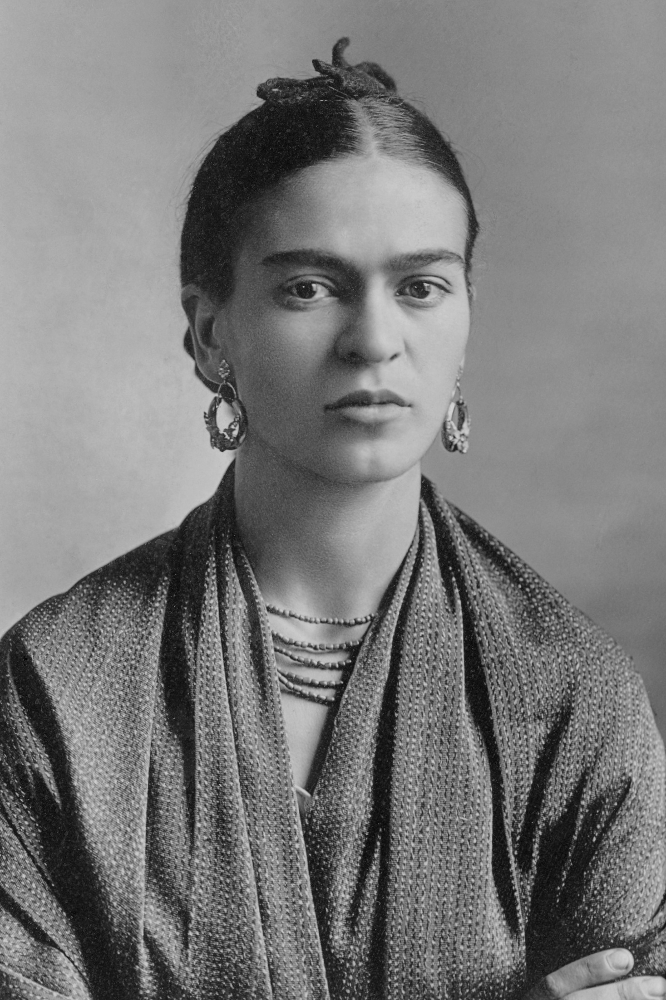

Magdalena Carmen Frida Kahlo Calderón (Coyoacán, Ciudad de México, 6 de julio de 1907-Coyoacán, Ciudad de México, 13 de julio de 1954), conocida como Frida Kahlo, fue una pintora mexicana. Su obra gira temáticamente en torno a su biografía y a su propio sufrimiento. Fue autora de 150 obras, principalmente autorretratos, en los que proyectó sus dificultades por sobrevivir. También es considerada como un icono pop de la cultura de México.3
Su vida estuvo marcada por el infortunio de sufrir un grave accidente de autobús en su juventud que la mantuvo postrada en cama durante largos periodos, llegando a someterse hasta a 32 operaciones quirúrgicas. Llevó una vida poco convencional. La obra de Frida y la de su marido, el pintor Diego Rivera, se influyeron mutuamente. Ambos compartieron el gusto por el arte popular mexicano de raíces indígenas, inspirando a otros pintores mexicanos del periodo posrevolucionario.
En 1939, sus pinturas fueron expuestas en Francia tras haber recibido una invitación de André Breton, quien intentó convencerla de que eran «surrealistas». Sin embargo, Frida no veía su arte reflejado en esta tendencia ya que ella consideraba que no pintaba sueños, sino su propia vida. Una de las obras de esta exposición (Autorretrato-El marco, que actualmente se encuentra en el Centro Pompidou) se convirtió en el primer cuadro de un artista mexicano adquirido por el Museo del Louvre. Su obra gozó de la admiración de destacados pintores e intelectuales de la época como Pablo Picasso, Vasili Kandinski, André Breton, Marcel Duchamp, Tina Modotti y Concha Michel. Falleció el 13 de julio de 1954, a los 47 años. Su cuerpo fue cremado y sus cenizas fueron llevadas a descansar a la Casa Azul, hoy conocida como museo Frida Kahlo.